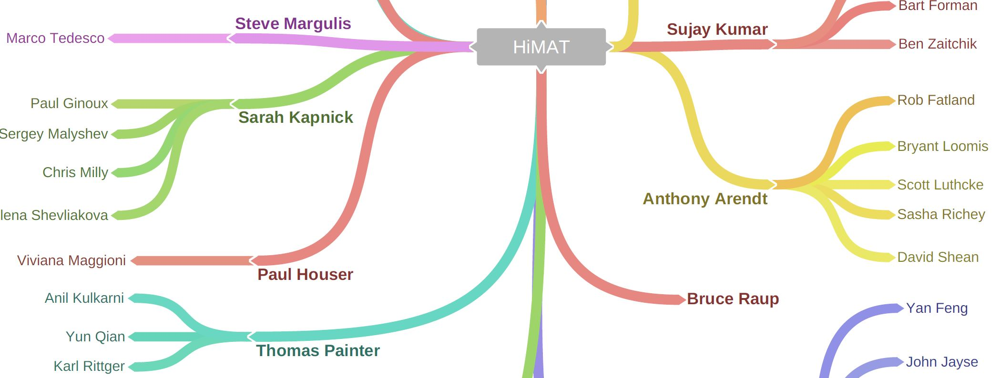

Collaboration Tools
Building effective team communication is the cornerstone of collaborative research. This does not mean scheduling as many meetings, calls and online communications as is humanly possible in the hopes that collaboartion will magically occur! Instead, there should be well designed and strategically timed channels of communication baked in to the team structures early in the process, each of which is targeted to a specific purpose. Every time some form of communication is scheduled, there ought to be a simple question asked: "What is the purpose of this meeting?". If no one has a ready answer, then save the meeting for a later time!
Personnel Chart
A simple but effective way to establish and maintain a connected team is to provide everyone with a roadmap of who is on the team. At the start of the project, the Project Manager should compile a spreadsheet that contains information on each team member's name, contact information, institution and position. It is important to include everyone who may be involved in the project, from research technicians to faculty members to program managers. It is helpful to then turn this information into a chart or graphic that maps out each of the team, for example by PI group. This information should be shared freely across the team and routinely updated when people leave or join the team.

Team Competencies
An optional companion to the personnel chart is a summary of skills each person is bringing to the project. One approach we have used is to send out a brief survey to each team member and ask them to provide their top three skills in various categories including research domain knowledge and technical skills (e.g. computer languages and computational platforms). This information can then be made available to the full team as an add-on to the personnel spreadsheet/database.
Communication Technologies
There has been an explosion of new communication and collaboration tools in recent years (Slack, Google Drive, GitHub, Zoom meetings, to name a few). Often we observe a tension between people wanting to take advantage of a communication technology, and those who don't have the desire to learn something new and wish to stay with what they know. We believe teams should meet early in the process to answer these questions:
- What are the various categories of communication that must be in place for collaboration to occur? These may include discussions about reserach ideas, software development, team logistics and data sharing.
- Which existing technologies are best matched to these categories? For example, GitHub issues are an ideal place to discuss changes to computer code, whereas Slack is a great place to post team updates about an upcoming workshop.
- What are the absolute minimum number of these tools that we are willing to learn and commit to using throughout the course of the project?. Getting consensus on a shared set of tools is vital because the success of many of these tools depends to a large extent on the majority of team members actually using them.
Below is a list of platforms with which we are familiar, and that we explored in previous projects, with varying degrees of success.
Instant Messaging
Instant messaging platforms offer a number of advantages when working on a collaborative effort. On these platforms, everyone in the collaboration is invited to a team forum where any postings from an individual will be viewed by everyone else. The advantage to these open forums is that no one is left out of important discussions. It also saves the administrative team a lot of time if they can post logistical updates once, for everyone to see, rather than sending out e-mails to long lists of recipients. Instant messaging platforms also provide spaces for real-time, one-on-one or small group discussions, if more privacy is needed. Slack is probably the most common instant messaging platform.
Federal Agencies and Communication Platforms
During the initial months of HiMAT we tried to using Slack for our internal communcations. At the time, some federal agencies such as NASA were restricted from using this technology. We instead tried "Yammer" a Microsoft communication tool. Be sure to explore the policies of various agencies before attempting to adopt a tool across your team!
Code Sharing
We strongly encourage the open sharing of code in the data sharing section. Communications about these codes belong in the well-established communication systems built into code sharing applications, the most common of which is GitHub. GitHub issues should be posted when requesting features or suggesting changes to existing scripts. GitHub organizations are also useful places for having team discussions about software.
Team Website
A team website can be a great tool for helping everyone to navigate the complex mix of communication tools being used in the collaboration. Early in the project, the website should be promoted as the "first stop" when questions arise about team logistics, scheduling and which tools to use to address a specific collaborative need. The website should be designed primarily to support the needs of the team and include features like event calendars, "feeds" listing upcoming events or deadlines, and links to various data sharing and collaboration resources. The website can also be a forum for sharing team results to the public, although it may be better to do this on a separate website.
Web Hosting
Providing regular updates on a website requires that members of the administrative team have direct access to web hosting resources. This level of access is understandably not possible if the website is hosted within a federal agency domain. A good solution is to use free web hosting services offered by GitHub.
Video Conferencing
Widespread fast internet speeds and advances in video conferencing applications create incredible opportunities for virtual, remote team meetings. Screen sharing, group chats and the ability to see each other in real time all contribute to productive virtual meetings. We see no reason for agencies to continue to promote audio-only conferences which are ubiquitously awkward, difficult to manage and make it easy for participants to tune-out.
Shared Network Drives
File sharing (which is different from the sharing of large research datasets, to be covered in data sharing) can get extremely messy and complicated on large teams. People often provide a link to a shared document on their personal cloud-based drive (such as Google, Dropbox, or Microsoft). Then a few weeks later someone goes looking for that file and has to comb through pages of past email threads.
A better approach is to set up a shared team drive so that no one needs to be be sending around links to shared files. Rather, people can just list the folder on the team drive in which the file is located. Examples include many of the "business" editions of commercial cloud providers such as Google Shared Drives.
Federal Agencies and File Sharing
As for Instant Messaging platforms above, some federal agencies do not allow their employees to use popular cloud hosting solutions like Google Drive.
Communication Frequency
Deciding on the frequency of team communications is delicate balancing act. Many researchers shun having to get on "yet another team call", but we feel this generally results from a lack of design thinking that goes into setting up team communications. If team administrators build a reputation of designing purposeful exchanges that are respectful of people's time, and that are only as long as they need to be to cover the necessary content, then more people will attend.
The first In person team meting is one in which all team members should be encouraged to attend. This meeting is an opportunity to decide on the frequency of team communications, establish a code of conduct and come to agreements about authorship and data sharing.